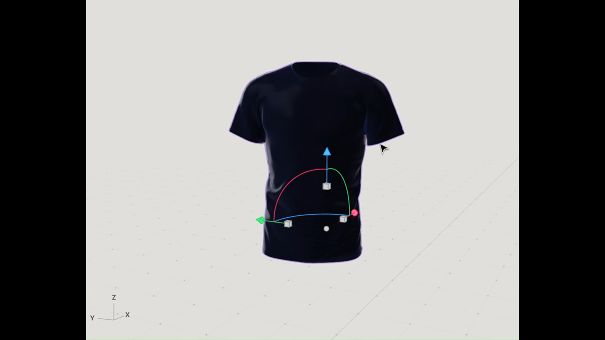

Welcome to My Tweet's Page
Check out this tweet I liked on Twitter:
Accenture Smart Textile Project – Bio Thread
Features:
- Continuous tracking of health indicators
- Comfortable and wearable like any other clothing
- Automatically maintains accurate health records
- Accessible for GPs and clinics
Materials:
- EeonTex Conductive Fabric for e-textiles
- Silver-coated nylon threads for attaching sensors
Who it benefits:
- Cardiovascular & respiratory patients
- People with other or miscellaneous disorders
Advantages:
- No social stigma, comfortable design
- Usable by all age groups
- Real-time feedback with reports for professionals
- Travel-friendly and breathable

Back to Home